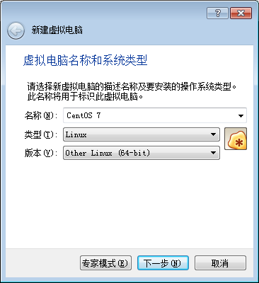
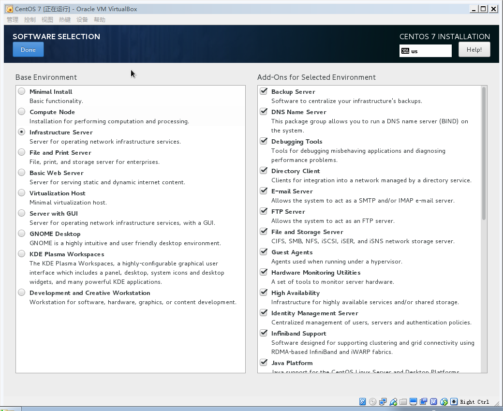
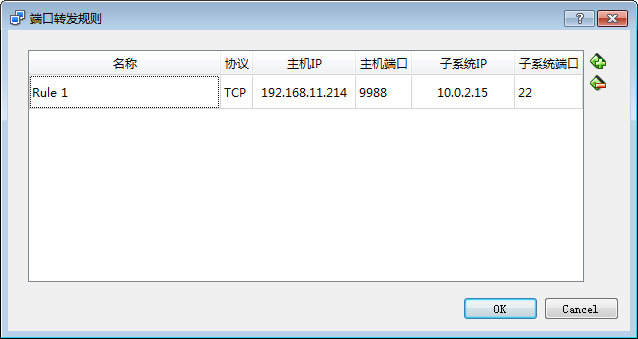
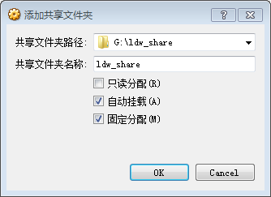

安装准备
- VirtualBox我是在电脑管家应用中心下载的，是一个免费的虚拟机软件
- CentOS 7的镜像我是在CentOS官方网站下载的，DVD ISO版本，也可以直接在这里找：下载地址
VirtualBox安装默认步骤就可以安装了。
CentOS 7安装
打开VirtualBox，点击新建（ctrl + n）
填写如下配置：

接下来是配置设置，保持默认选项就可以了，创建成功。
点击启动，首次启动会选择一个启动盘，选择CentOS 7的镜像文件启动
选择Install CentOS后就进入到图形界面安装了，根据提示来Continue就可以了，只有一步需要注意，就是安装Software Selection不要保持默认，选择Infrastructure Server，把右边的选项都勾起来，如下：

然后等待安装成功就可以了。这是一个无图形界面的版本。
相关配置
网络设置
目标是通过SecureCRT来连接虚拟机，步骤是：
用root登陆后，输入dhclient，获取一个虚拟机IP
右键虚拟机，选择设置（ctrl + s） –> 网络，连接方式选择网络地址转换（NAT），高级 –> 端口转发，添加一个端口转发，主机IP是本机IP，端口号自定义，但要记住，以后SecureCRT连的就是这个IP和端口；子系统IP是虚拟机IP，端口是22，如图：

这里是说明，连接本机的192.168.11.214:9988，就相当于连接虚拟机的10.0.2.15:22
然后使用SecureCRT连接就可以了，但这里有一个问题，每次重启都要输入dhclient来分配一个ip，解决方法是：
编辑文件vim /etc/sysconfig/network-scripts/ifcfg-enp0s3，将NOBOOT的值改成yes。（虽然我不清楚为什么，但这样做就可以）
共享本机硬盘
目标是共享主机上的某一个目录或磁盘，这样就可以方便的进行开发了（本机开发，虚拟机运行）。步骤是：
点击虚拟机运行窗口 –> 设备 –> 安装增强功能
挂载光盘并安装相关文件：
1 | mount /dev/cdrom /media |
- ctrl + s 打开虚拟机设置 –> 共享文件夹，添加一个本地共享目录，比如是ldw_share，自动挂载，固定分配，如：

- 在虚拟机里创建一个目录，可以命名为ldw_share，然后输入命令：
1 | mkdir ldw_share |
即挂载成功。
修改系统时间
默认情况下系统时间不是CST时间（中国上海），输入如下命令设置：
1 | rm -rf /etc/localtime |
修改环境变量PS1
PS1代表命令提示符，将其追加到/etc/.bash_profile：
1 | PS1="[\[\e[36;1m\]\u@\[\e[32;1m\]LDW\[\e[31;1m\] \t \[\e[36;1m\]\w\[\e[0m\]]# " |
安装lrzsz工具
设置共享目录可以达到本机-虚拟机传送文件的目的，然而我觉得更方便的办法是使用lrzsz工具。
直接输入命令即可安装：
1 | yum install lrzsz |